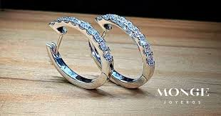

La mayoría de las gemas son cristalinas y poseen una “estructura cristalizada”, es decir, una ordenación tridimensional regular y repetida de sus enlaces atómicos. Por lo general constan de un solo cristal (macrocristalinas), como es el caso de la amatista, el zafiro y la turmalina. Otras gemas tienen una estructura cristalina tan fina que no es posible reconocer partes diferentes, ni siquiera bajo el microscopio. El término “criptocristalino” incluye gemas tales como el ágata, la calcedonia y el jade. Independientemente de su estructura cristalina, son muy pocas las gemas que crecen en la naturaleza sin factores perturbantes.
Piedras preciosas |
Piedras SemiPreciosas |
Comercio |
 |